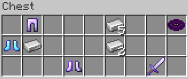

Tall Disc
Tall is one of the three Music Discs added to Onyxpack.
Credit
This song was composed by YouTuber Naps the Block here. While we did not specifically ask for permission to use this track in Onyxpack, they typically release their music under the Creative Commons license. We will remove this song from Onyxpack immediately if requested.
Aquiring
You can find Tall discs in end city treasure chests, an example of one of these chests is below.
